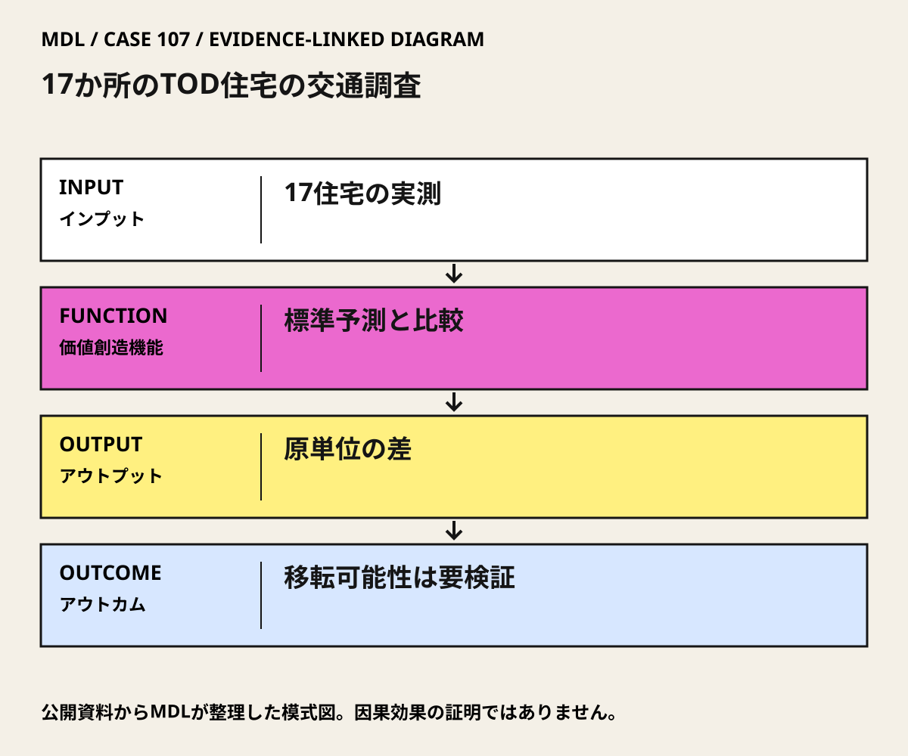

I / INPUT
何を持ち込んでいるか。
活動の出発点となる資源と課題を分けて整理します。「自社」は、その場・制度を運営する組織を指します。
II / VALUE CREATION FUNCTIONS
資源を、どう価値へ変えるか。
以下は既存の8ステップへの編集上の対応づけです。各取り組みの公式な工程名や、全工程を自前で担うことを意味しません。
III / OUTPUT
直接、何が生まれたか。
試作品、データ、契約、標準、育成した人材など、活動から直接生まれたもの。
17住宅の実測と標準予測を比較した原論文、およびTODの住宅・駐車・交通に関する研究報告。
IV / OUTCOME
その結果、何が変わったか。
実際の利用、行動、業務、事業、地域の変化。報告された変化と、当該活動に帰属できる効果は区別します。
平均は実測3.754トリップ／住戸・平日、ITE予測6.715。実測は予測より44%少なかった。
公開資料で確認出典 1調査による駐車整備費削減、居住者の生活改善、実際の基準改定件数は本資料では未確認。
公開資料では未確認
PROJECT IN FOCUS / 具体的な事例
17か所のTOD住宅の交通調査
確認できた段階：複数住宅の研究評価 調査確認日 2026-10-06
誰の課題を、どう扱ったか
確認できた変化
平均は実測3.754トリップ／住戸・平日、ITE予測6.715。実測は予測より44%少なかった。
評価の限界：44%はITE標準予測との比較であり、整備前比の44%減や、TODの純因果効果ではない。自己選択、都市圏、交通サービス、駐車条件の違いがある。住宅17件の平均を、日本の単一計画の保証値にしない。
DESIGN BACKWARDS FROM IMPLEMENTATION
社会実装から逆算して、
何を先に整えているか。
実証の先にある導入・運用・継続から、この事例の設計を読み解きます。原典で確認できる仕組みと、MDLの設計解釈・他地域へ応用するための提案を区別して読んでください。「提案」「未実施」と記す内容は、当地で実施済みの工夫ではありません。仕組みの存在と、全案件で成果が出たことも別に扱います。
MORE DETAIL / 運営・根拠・応用
運営の全体像と、学びを深める資料。
費用負担、公表値、応用条件、写真・動画、原典を続けて確認できます。
01どう動かしているのか。
17件の平日自動車トリップを住戸当たりに揃え、ITEの一般的な予測値と比較する。差をTODの一律効果にせず、都市圏や密度、交通・駐車条件を伴う観察値として扱う。
意思決定と本人の関与：学習上の判断：自治体の開発審査・交通担当が、駐車台数や交通影響負担を一般的な原単位だけで決めず、対象地区の実測で補正すべきかを判断する。法的基準の変更はこの調査だけで決めない。 Robert CerveroはG. B. Arringtonとの共著研究者。対象住宅の開発者・設計者としての関与を示す事例ではない。
- 同じ単位で実測する
- 予測と実測を比べる
- 適用条件を限定する
02誰が負担し、誰が担うか。
研究費の負担者・個別開発者の拠出は本カードの確認範囲では未確認。
制度やプログラムの財源と、各参加企業・地域に発生する費用は同じではありません。公開範囲を超える案件別予算・契約条件は未確認です。
03確認できたこと。
04日本で活かすなら。
日本への移転対象は削減率ではなく、一般的な予測を現場の観測で検証する手順。住宅価格への駐車費の転嫁や車を必要とする世帯のアクセスも併せて確認する。
05そのまま真似できないこと。
44%はITE標準予測との比較であり、整備前比の44%減や、TODの純因果効果ではない。自己選択、都市圏、交通サービス、駐車条件の違いがある。住宅17件の平均を、日本の単一計画の保証値にしない。
06次に、何を確かめるか。
提案・未実施：自治体の交通審査担当が住宅運営者と、1駅周辺の複数住宅を対象に90日以内の実測計画を組む。住戸当たりトリップ、駐車占有率、駅への実歩行時間を測り、現行原単位、地区補正、駐車・交通サービスの組合せと現状維持を比較。Continue＝繰り返し測定でも差が安定、Pivot＝時間帯・世帯構成で差が変わる、Stop＝標本不足や安全上の支障で基準緩和の根拠にならない。
07写真・図と原資料で確かめる。
現場の写真を見る ↑
DIAGRAM: モビリティデザインラボ · 根拠資料 ↗
図の説明
公開資料に基づく模式図。17住宅の実測 → 標準予測と比較 → 原単位の差 → 移転可能性は要検証。実景や地理的配置を示さない。
2026-10-06 · MDL作成の説明図。第三者の写真・図面の複製ではありません。
冒頭写真：Braddock Road駅の高架ホームと駅前のシェアサイクル
原資料で、当時の調査・実践を読む ↗08原典を読む。
Vehicle Trip Reduction Impacts of Transit-Oriented Housing ↗
17住宅・5都市圏、3.754対6.715、ITE予測比44%という比較定義
英語・原論文・大学リポジトリ。書誌・要旨（HTML）。全文PDFリンクあり、今回のPDF取得は失敗
Effects of TOD on Housing, Parking, and Travel, TCRP Report 128 ↗
TODの住宅・駐車・交通評価をまとめた共著研究報告
英語・TRB研究報告・刊行元。目次・書誌・章入口。今回のHTML本文表示は不完全
Travel demand and the 3Ds: Density, diversity, and design ↗
本人共著の3Ds原典。観察的関連を読むための背景
英語・査読原論文・MIT公開PDF。全文PDF・無料